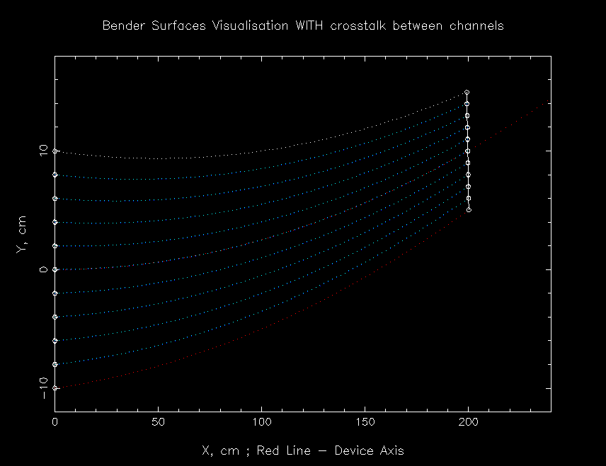

Picture 1. One channel of the bender
Picture 1. One channel of the bender
Please NOTE! Subsequent modules always refer to the new origin, which
is defined as the middle of the exit window. It is generated automatically
by the program, also in the case of curvature (the orientation of the
frame follows the curvature).
mirr0.dat: absorbing coating (reflectivity = 0.0) mirr1a.dat: theta_Ni coating (theta_Ni = 0.099138 deg) mirr1b.dat: theta_Ni_58 coating (theta_Ni_58 = 0.11456 deg) mirr2.dat: super-mirror coating (2 theta_Ni) mirr2linear.dat: supermirror coating, reflecitivity 0.99 -> 0.9 from theta_Ni to 2 theta_Ni; cutoff at 2 theta_Ni; mirr3+.dat: super-mirror coating (3.5 theta_Ni)The reflectivity file contains the probability of reflection in dependence of the incident angle for neutrons with a wavelength of 1 Å. Each row contains 10 data points and covers 0.01 deg, i.e. each point gives the probability average over an angular interval of 0.001 deg (the second row covers 0.01-0.02 deg a.s.o.). The number of data points may vary between 1 and 1000. If end of file is reached (e.g. only 52 values are given) the probability to reflect 1 Å neutrons for higher angles is set to 0. If no reflectivity file is given as an input or mirr0.dat file is given, the guide operates in total absorption mode, i.e. each neutron is hitting a guide wall is lost or transmited in the next channel (depending from mode).

Picture 2. Visualisation of bender channels, view from above
Parameter Unit |
Description |
Command option |
| entrance height
[cm] |
size of the guide entrance (in z-direction) | -h |
| exit height
[cm] |
size of the guide exit (in z-direction) | -H |
| substrate width
[cm] |
thickness of the material that separates two neighbouring channels,
usually the small part of the neutrons is passing in the next channel via that material |
-s |
| length
[cm] |
length of the bender | -l |
| spin up:
left, right, top/bottom plane |
reflectivity file for the coating of the guide on the inner side (left),
on the
outer side (right) and on the top and bottom plane for spin up neutrons |
-i, -m, -k |
| spin down:
left, right, top/bottom plane |
reflectivity file for the coating of the guide on the inner side (left),
on the
outerside (right) and on the top and bottom plane for spin down neutrons |
-I, -M, -K |
| surface file | file which is containing the entrance and exit positions of the channel borders
and
their radii |
-u |
| surface waviness
[deg] |
waviness of the inner guide surface, i.e. deviations from a perfectly
plane surface |
-r |
| abutment loss length | neutrons that hit the surface close to one of the ends of the guide(<= length) is rejected. | -a |
| visualisation | yes: graphics of the neutron paths will be stored on the given device during the simulation
no : no graphics stored |
-y |
| device | Choose the device for graphic visualisation: 1-display, 2-file, 3-both | -o |
| polarisation | yes: splitting into spin-up and spin-down and using different reflectivity
files depending on the spin state
no : no polarisation considered, spin-up reflectivity files used for all neutrons |
-p |
| unreflected neutrons | Value 0(No) : neutrons that are not reflected are absorbed.
Value 1(Yes): neutrons that are not reflected are transmitted with attenuation according absorption material (see options -z and -w), neutrons which transmitted via extreme surfaces (left and right) are absorbed. |
-g |
| test of bender geometry | if activated (value 1) the test of bender geometry is carried, else is not carried. This is useful for bender
with non-standart geometry. If you have received a warning message, please contact with the author of module: manoshin@nf.jinr.ru |
-t |
| number of axis for spin quantization | this feature using with polarising neutrons. if spin of neutron is parallel (antiparallel) of axis
0X or 0Y or 0Z, this value must be 0 or 1 or 2 accordingly. The default value is 0 (axis 0X), so the magnetic field is parallel of axis OX. |
-V |
| information file | name of file, which contain some information about geometry of bender | -A |
| radius of curvature | Radius of curvature of base circle-axis of bender
(if zero - bender axis is straight line) |
-R |
| absorption material in the channel | the absorption coefficient of the material inside of the bender channel
Active, if neutrons are transmitting between channels of bender: Option -g1 |
-c |
| transmission file of bender channel | File, which characterized the transmission of
material inside bender channel. Active, if options -g is unit => -g1 and -c is zero => -c0. |
-C |
| first absorption material | Absorption material in the inner(left) side of the channel
See from bender entrance - left side. Active, if neutrons are transmit between channels: Option -g1 |
-z |
| transmission file of left side of channel | File, which characterized the transmission of
material in the left side of channel, see from entrance. Active, if options -g is unit => -g1 and -z is zero => -z0. |
-T |
| second absorption material | Absorbpion material in the outer(right) side of the channel
See from bender entrance - right side. Active, if neutrons are transmit between channels: Option -g1 |
-w |
| transmission file of right side of channel | File, which characterized the transmission of
material in the right side of channel, see from entrance. Active, if options -g is unit => -g1 and -w is zero => -w0. |
-O |
Last modified: 30.09.2003